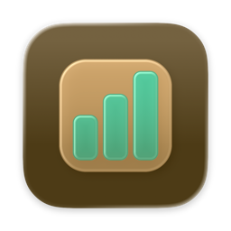
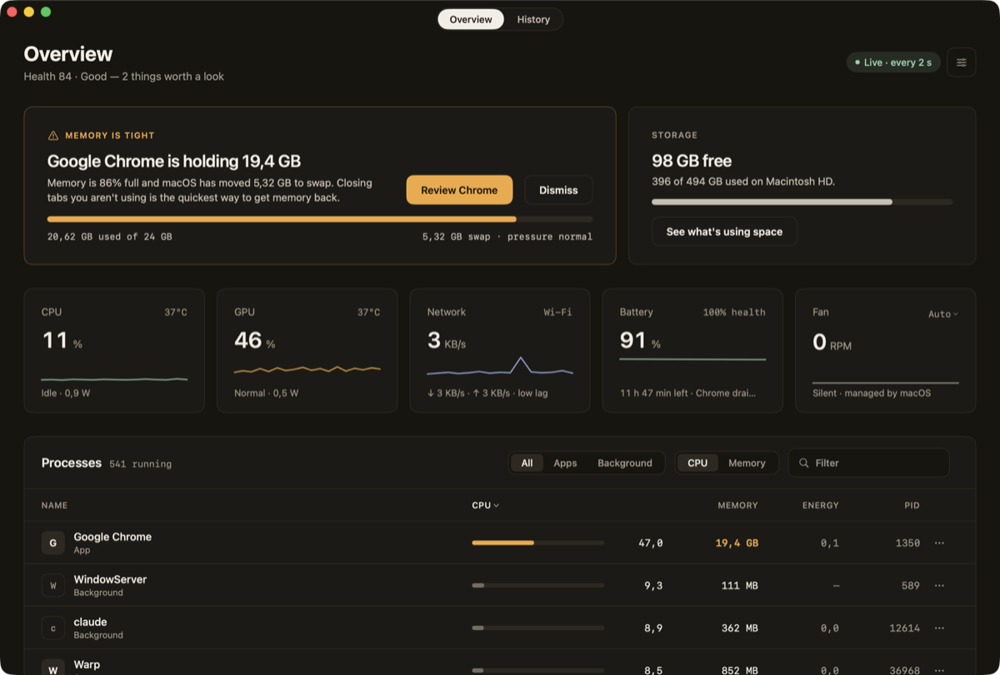

MangoStats
An honest Mac system monitor in the menu bar: CPU, GPU, memory, storage, network, temperatures, fan, battery, and every process, with the one thing worth a look up front.
Download the latest release · Source on GitHub · macOS 26 or later on Apple silicon.
